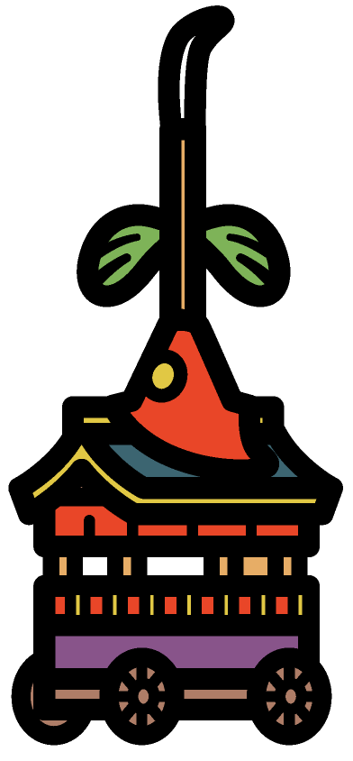

凡例
京町家
10m以下
10m ～ 15m
15m ～ 20m
20m ～ 31m
31m ～ 45m
45m～
×
サブカメラ視点選択
×
視点を選択
御池通
四条通
新町通
河原町通

0% 読込済
見やすく
しらべる
表示するラベルを選択
祇園祭
文化財
景観
京町家
伝統産業
京都市の取組
動画
歩き回る
見る場所
地図切替
地理院タイル
電子国土基本図（オルソ）
標準地図
航空写真 (1945-50)
航空写真(1974-78)
各種情報
用途地域
高度地区
京町家保全継承地区
山鉾一覧
▶ | 100倍再生
×
×
南
北
東
西
読み込み中...
×
祇園祭シミュレーター
～山鉾巡行～
始める
チュートリアル
×
×
建築物を時代ごとの高さ規制に合わせて表示
昭和２５年～昭和４６年高さ規制
昭和４６年～平成１９年高さ規制
平成１９年～令和０７年高さ規制
PLATEAU2024モデル
元の表示にもどす